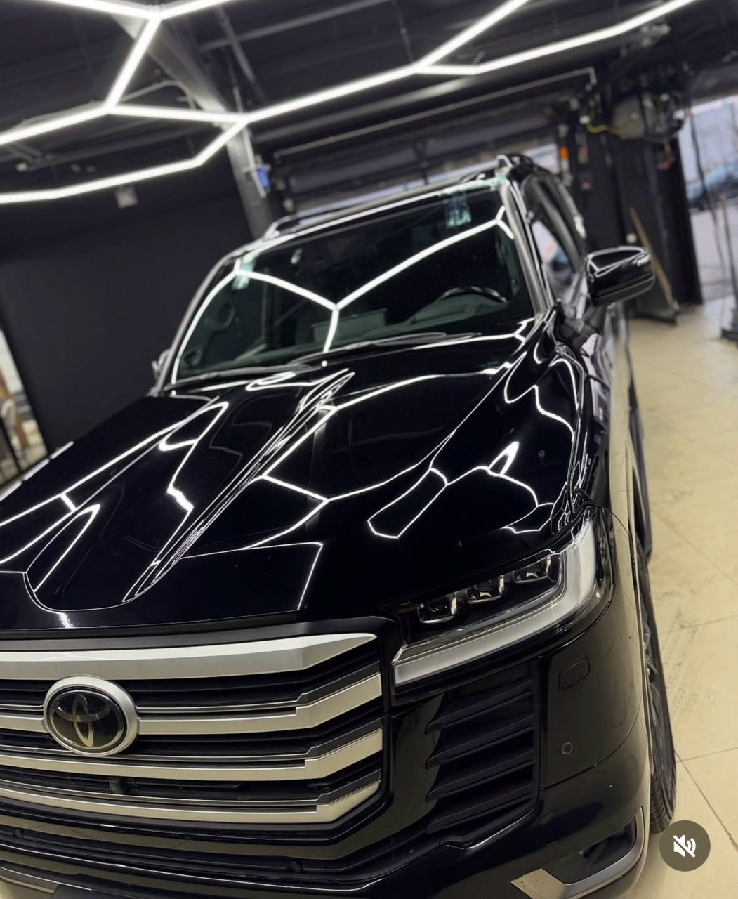
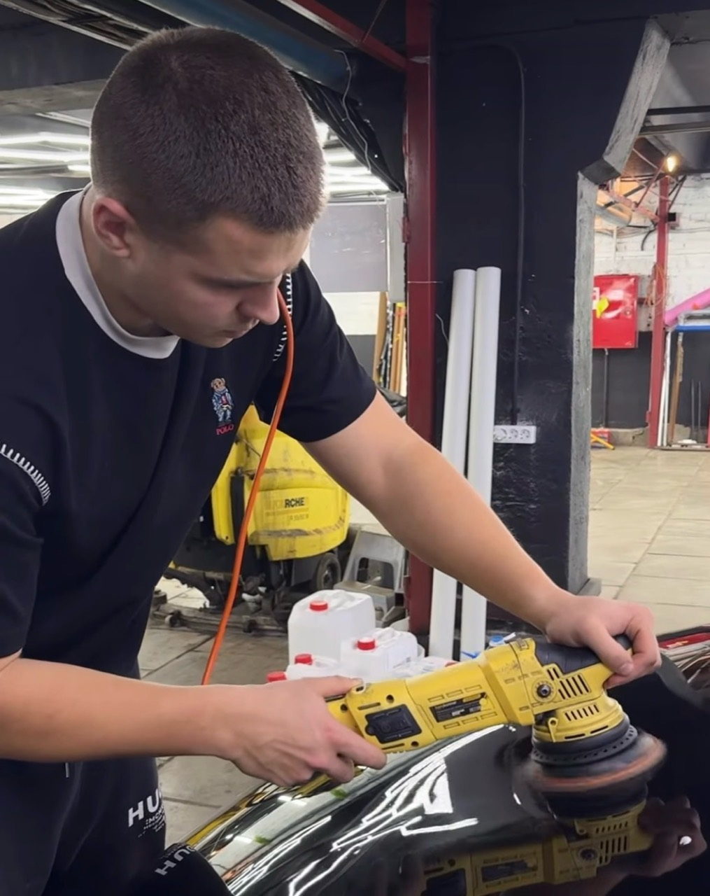
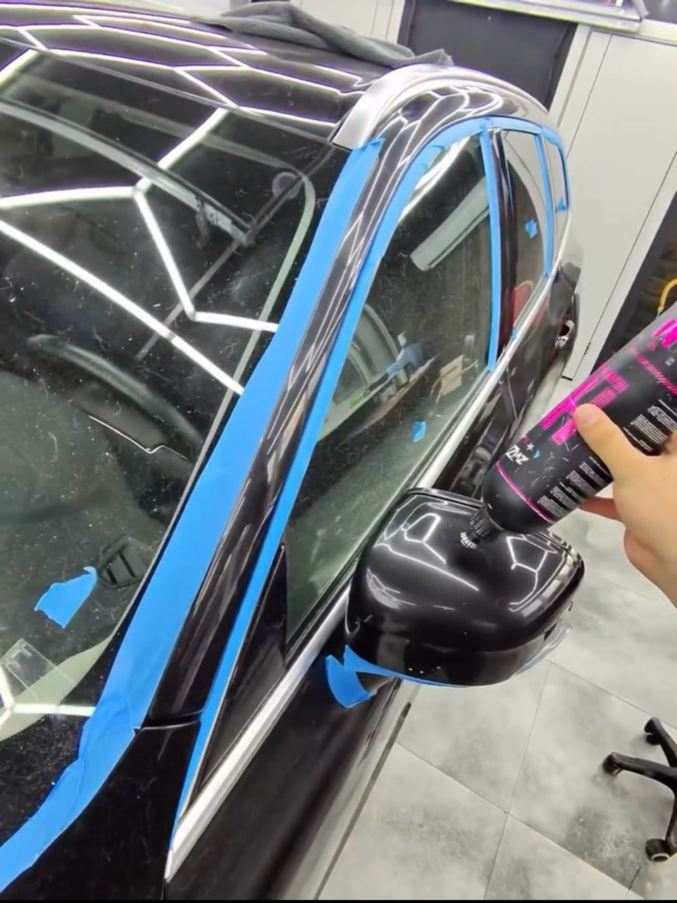
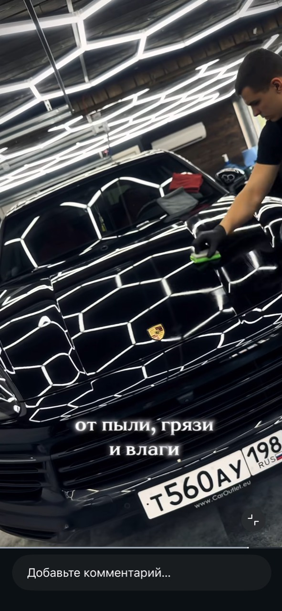

Полировка кузова
Вернуть глубину цвета и выразительный блеск. Работа с потёртостями и мелкими царапинами.
Москва · Детейлинг с вниманием к деталям
Глубина цвета. Чистые отражения. Защита на каждый день. Бережный уход за автомобилем в G-SKIN.

01 / Что мы делаем
Подбираем уход под состояние автомобиля
и то, каким вы хотите его видеть.
Вернуть глубину цвета и выразительный блеск. Работа с потёртостями и мелкими царапинами.
Керамика и уход за поверхностью — чтобы сохранить результат и облегчить последующие мойки.
Дополнительная защита кузова. Обсудим зоны оклейки и подходящий вариант для вашего авто.
Внимание к ткани, коже и каждой поверхности. Удаление загрязнений, пыли и неприятных запахов.
Объём работ и стоимость обсудим после знакомства с автомобилем.
02 / В объективе G-SKIN
Реальные автомобили. Реальная работа.
Без лишних слов.

ЕГОР / G-SKIN03 / За результатом — человек
G-SKIN — это Егор и внимание к тому, из чего складывается результат.
Он руководит студией и сам работает с автомобилями. От подготовки поверхности до финального блеска — здесь важны и большие плоскости, и самые маленькие детали.
Полировка, защита или обновление салона: начнём с вашего запроса и подберём подходящий уход.
04 / Подход к работе

Обсуждаем состояние кузова, ваши пожелания и нужные услуги.
Определяем объём работ, стоимость и удобное время визита.
Подготовка, работа с поверхностью и финальный осмотр результата.

Защита — следующий шаг после блеска.G-SKIN / Москва
Расскажите Егору, что хотите изменить.
Начнём с простого разговора.